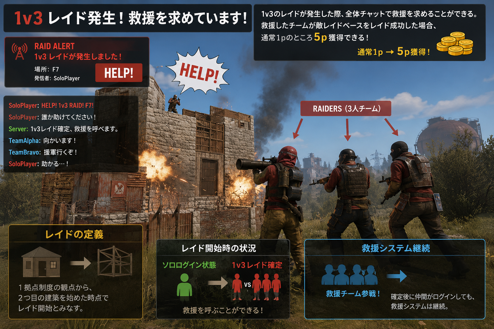

// BRIEFING_04
修復状態について
本拠点へレイドされてTCを失ったチームは「修復状態」となる。修復状態とは、レイドされたチームが再起するための保護期間です。レイド成功したチームのディスコ報告から「修復状態」開始。
修復状態はレイド完了報告から4時間後に自動解除。自動解除前に準備ができたら「修復状態」チームがディスコへ宣言する。
※4時間のカウントは鯖開放時間と同期とします。2時間後に鯖が終了時点で修復状態になった場合、翌日の鯖開放から残り2時間がカウントされます。
TC喪失
4時間以内
拠点再建完了
準備出来次第、ディスコに宣言することで復帰可能
「修復状態」のチームへの本拠点のレイドは禁止。同様に「修復状態」のチームから他チームへのレイドは禁止。
※PvPは可能。修復ファーム中の戦闘回避が不可能なため。
レイド中に自拠点がレイド（TC破壊）された場合、その時点で自チームのレイドは即中止。
Aチーム
①レイド中 →
Bチーム
Cチーム
②レイド成功 →
Aチーム
③Aチーム→Bチームへのレイドはその時点で中止
レイド拠点がレイドされても「修復状態」にはならない。
// BRIEFING_04-2
ソロログイン時の人数差レイド救済
１ｖ３のレイドが発生した際、全体チャットで救援を求めることができる。救援したチームが敵レイドベースをレイド成功した場合、通常１ｐのところ５ｐ獲得できる。
レイドの定義１拠点制度の観点から、２つ目の建築を始めた時点でレイド開始とみなす。
レイド開始時点で、敵拠点がソロログインの状態だった場合1v3レイド確定。救援を呼ぶことができる。
確定後に仲間がログインしても、救援システムは継続。
